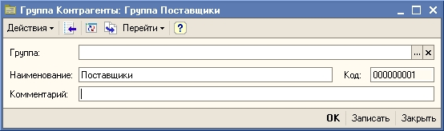
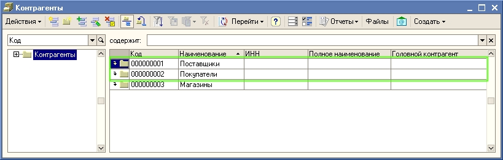
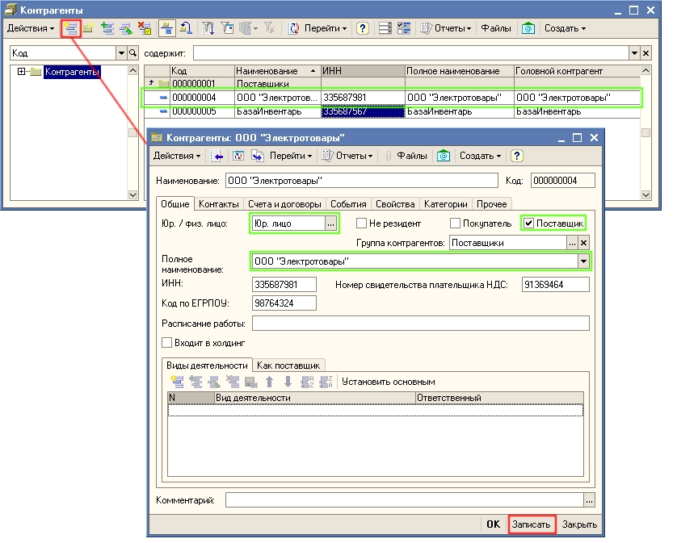
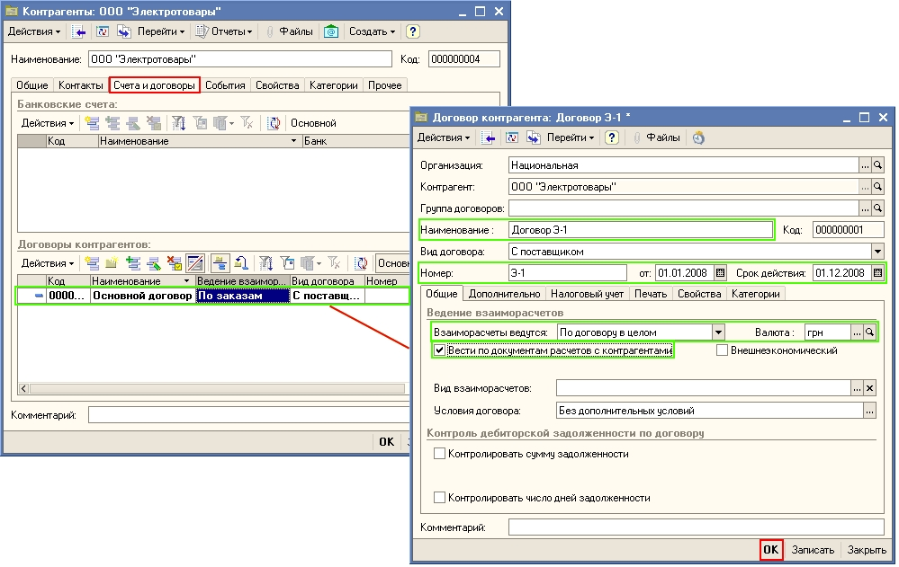
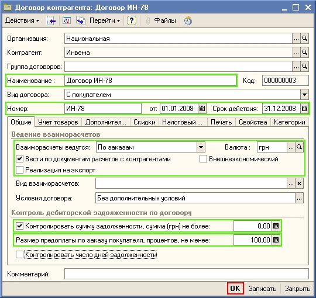
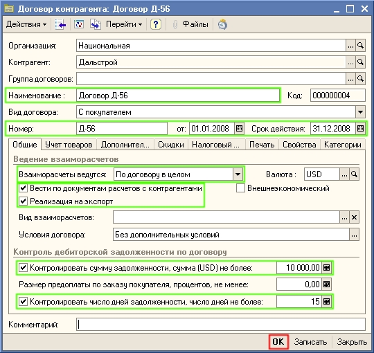

1. Откройте список контрагентов торгового предприятия.
Для этого выберите в меню Справочники пункт Контрагенты.
| ПРИМЕЧАНИЕ В качестве контрагентов организации могут выступать юридические лица, индивидуальные предприниматели и частные лица. Список контрагентов общий для всех организаций торгового предприятия, учет деятельности которых ведется в информационной базе. |
2. В списке Контрагенты создайте группы контрагентов «Поставщики» и «Покупатели».
Для добавления группы «Поставщики» нажмите кнопку  в командной панели формы списка (или выберите меню Действия — Новая группа). Введите наименование группы «Поставщики» так, как показано на рисунке.
в командной панели формы списка (или выберите меню Действия — Новая группа). Введите наименование группы «Поставщики» так, как показано на рисунке.

3. Нажмите кнопку ОК в форме Группа Контрагенты.
4. Добавьте в список контрагентов группы «Покупатели» и «Магазины» аналогично тому, как была добавлена группа «Поставщики».
Теперь в списке контрагентов созданы три группы «Покупатели», «Поставщики» и «Магазины». В группу «Магазины» в дальнейшем будем добавлять информацию о тех сторонних магазинах, которым товар отдается на комиссию. В группы «Покупатели» и «Поставщики» нужно добавить контрагентов — деловых партнеров вашей организации.

5. Добавьте в группу «Поставщики» нового контрагента ООО «Электротовары».
Для этого щелкните дважды по строке с названием группы, а затем нажмите в командной панели формы списка кнопку  (или клавишу Insert или выберите меню Действия — Добавить). В открывшемся окне на закладке Общие заполните основные сведения о контрагенте так, как показано на рисунке:
(или клавишу Insert или выберите меню Действия — Добавить). В открывшемся окне на закладке Общие заполните основные сведения о контрагенте так, как показано на рисунке:

6. После заполнения всех необходимых полей нажмите кнопку Записать в правой нижней части формы Контрагенты.
7. Перейдите на закладку Счета и договоры в форме Контрагенты. Для каждого контрагента нужно заполнить сведения как минимум об одном договоре, так как именно в договоре устанавливаются условия сотрудничества с деловым партнером. В списке договоров уже присутствует один договор с наименованием «Основной договор» и видом договора «С поставщиком».
8. Откройте форму Договор контрагента для изменения сведений о договоре с контрагентом. Для этого щелкните дважды по строке с названием договора «Основной договор» (или нажмите кнопку  или выберите меню Действия - Изменить). В открывшейся форме Договор контрагента заполните значения так, как показано на рисунке:
или выберите меню Действия - Изменить). В открывшейся форме Договор контрагента заполните значения так, как показано на рисунке:

9. Нажмите кнопку ОК в форме Договор контрагента для сохранения сведений о договоре в информационной базе и закрытия формы.
10. Нажмите кнопку ОК в форме Контрагенты для сохранения сведений о контрагенте «Электротовары» в информационной базе и закрытия формы.
11. В группу «Покупатели» добавим двух контрагентов "ООО Инвема" и "ООО Дальстрой" с различными параметрами установки взаиморасчетов. Добавление контрагентов происходит аналогичным образом. Обратите внимание на то, что для контрагентов-покупателей должен быть установлен флаг "Покупатель". При записи контрагента автоматически создается договор С покупателем.
12. Контрагент ООО "Инвема" работает на условиях 100% предоплаты по ранее оформленному ему счету (заказу покупателя). Для него надо установить параметры договора, так, как это показано на рисунке:

13. Контрагент "Дальстрой" работает на условиях кредита. Этому контрагенту можно отпускать товар в кредит на сумму 10000 долларов, при этом задолженность должна быть погашена в течении 15 дней после отгрузки ему товаров. Для него надо установить параметры договора так, как это показано на рисунке:

| ПРИМЕЧАНИЕ Для каждого контрагента может быть зарегистрировано сколько угодно различных договоров с различными параметрами взаиморасчетов. Один и тот же контрагент может выступать в роли поставщика и покупателя. В том случае, если контрагент заключил договора с различными организациями торгового предприятия, то необходимо зарегистрировать несколько договоров одного контрагента с различными организациями торгового предприятия. |
Следующий раздел: «Отражение торговых операций помощью документов»